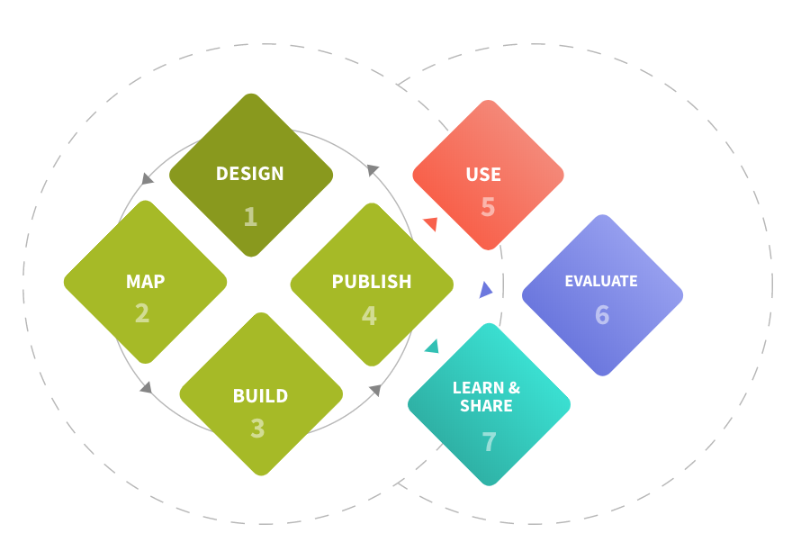
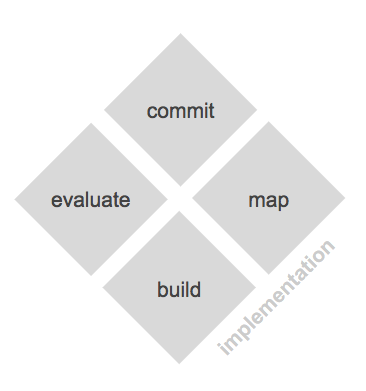

The adoption journey¶
Adopting a policy related open data standard is generally a multi stage process.
The Open Contracting Data Standard uses the 7-step model below to describe the process of data standard implementation within the context of wider adoption of open contracting principles and practices.

360Giving describe a five-step data publication process.
For example
The five steps for 360Giving data publication are:
- Discuss and plan
- Select your publishing template
- Prepare your data
- Publish on your website
- Register with 360Giving
At a more general level, we think about four stages of adoption, arranged as part of an ongoing cycle:

Commit¶
For policy related open data standards there will often be a process for securing commitments to adopt. This might come through resolutions or motions, through public announcements, or through getting organisations to sign up to a pledge of some form. Commitments are vital to (a) understand the goals of the implementer, and align implementation with those goals; (b) help overcome technical or bureaucratic barriers that might get in the way of adoption.
Map¶
In general, the data to be represented through a standard already exists in some system, or systems that could collect it exist. The mapping stage addresses the systems and business processes that will need to change to produce or consume standardised data, as well as look at the level of individual data elements to agree how data will be represented or consumed.
Build¶
At this stage the process and systems to create or consume standardised data are created. There may need to be a few iterations here to get something that produces data of adequate quality.
Evaluate¶
One of the structural features of open data, is that it is often shared before it is used. This can mean that problems with the data are not picked up straight away, but instead are identified when someone first comes to analyse it, maybe weeks or months after the 'build' stage is complete. This is why early review or evaluation of data and data quality is vital to building a sustainable open data ecosystem. This might be manual review of data, or might come through the availability of tools that can be used to review the data resulting from the build stage (e.g. Online Validator or Quality Tool).